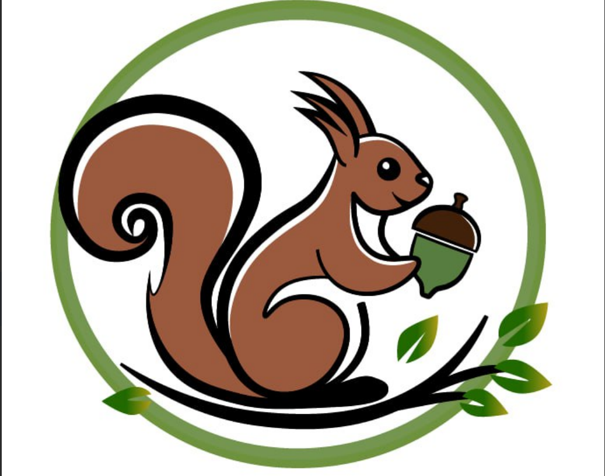

Logo

Uuniro games
App Description
The logo for our game studio features fish symbolizing dreams, freedom, and creativity. It reflects our imaginative approach and the journey each game offers into a world of possibilities.

Chic Spot
App Description
The logo for our game studio features fish symbolizing dreams, freedom, and creativity. It reflects our imaginative approach and the journey each game offers into a world of possibilities.

Parc
App Description
The logo for our game studio features fish symbolizing dreams, freedom, and creativity. It reflects our imaginative approach and the journey each game offers into a world of possibilities.